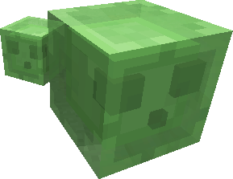

|
| |||||||||||||||||||||||||||||||||||||||||||
|
NOTE: This tool gives you the coordinates of the lines between chunks.
If the coordinates are 16 to 32 then 31.9 is in the chunk and 32.1 is not. Get it? Minecraft Slime Hunter BETA by last_username discuss and report bugs here verify results here   Creative Commons Attribution-NonCommercial 3.0 Unported License. | ||||||||||||||||||||||||||||||||||||||||||||